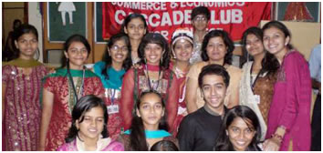

CASCADE CLUB

Enriching students' potential, shaping theirpersonality, nurturing their talents and giving them the platform they deserve is what the CASCADE CLUB (co-curricular club) is all about. Cascade club is a perfect combination of HARDWORK, EFFICIENT MANAGEMENT and a lot of FUN which leads to SUCCESS in every event undertaken. It believes in its slogan "EXCEL IN ACADEMICS, EXCEL IN ACTIVITIES". The CASCADE core team had decided not to refuse membership to anyone as everyone has some unique talent and we help to bring it out. The following events were conducted during the academic year 2009-10.
The Junior College members were in action much before the academic year had begun, they were helping the students' council with admission work. The admission process can be grilling for any new comer and the students helped the new entrants to make the transition as easy as possible.
EVENTS :
Mehendi Designing Competition- August 6, 2009.
Card Making Competition - August 11, 2009.
CASCADE also celebrates the most awaited week of H.R i.e the H.Rite Week H.Rite SPECIAL WEEK CELEBRATION - December 1 - 5, 2009.
Denim Day : December 1
Twins Day : December 2
Black n White Day : December 3
Traditional day : December 4
Indo-Western Day : December 5
CASCADE members were in charge of the reception and hospitality for the following programmes:
- Welcoming Freshers and active participation in admission process.
- Participation in "Awareness on Terrorism" programme organised by Mumbai Police, NCPA.
- Organising an entertainment programmes for students of King's College (UK) and NYU Stern(USA).
- Participation in "Missing for a Mission" - a programme for providing solar lanterns to villagers.
Core Committee :
Profs.-in-charge :- Mrs. Rekha Verma, Ms. Dipti Acharya
SYJC Members :- Ankita Bari, Khanjan Gohil
FYJC Members :- Disha Dedhia, Khushboo Shah, Deepika Sachdev, Shreya Shah, Pallavi Maheshwari, Yuga Deodhar, Yogini Vaidya, Mokshesh Shah, Raj Vyas